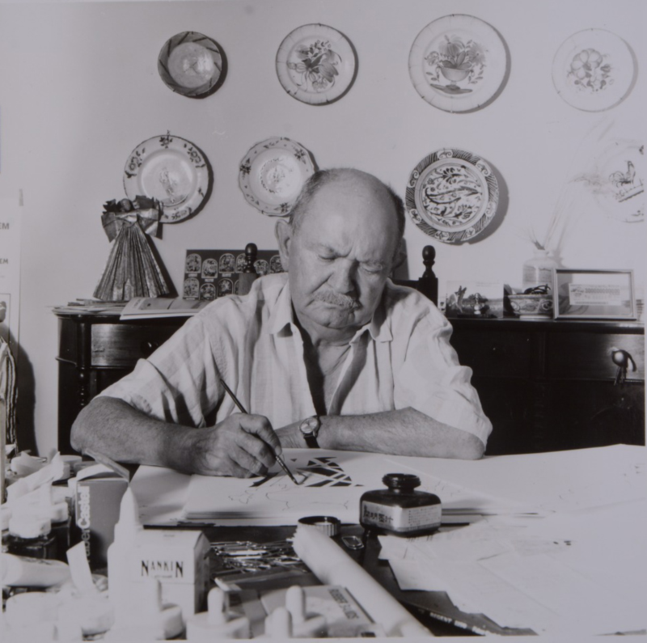

Quem foi Poty Lazzarotto?
Napoleon Potyguara Lazzarotto, conhecido como Poty Lazzarotto, nasceu em Curitiba, no Paraná, em 29 de março de 1924. Foi desenhista, gravador, ilustrador, muralista e professor. Sua obra teve grande importância para a arte paranaense e brasileira.

A trajetória de Poty
Poty começou a demonstrar interesse pelo desenho ainda criança, em Curitiba. Em 1942, recebeu uma bolsa de estudos para estudar na Escola Nacional de Belas Artes, no Rio de Janeiro. Lá, teve contato com a gravura e estudou com o artista Carlos Oswald.
Em 1946, Poty foi para Paris com uma bolsa do governo francês, onde estudou litografia na Escola de Belas Artes. Ao retornar ao Brasil, continuou sua carreira como artista, ilustrador e professor.
Poty também ficou conhecido por suas ilustrações de livros. Trabalhou com importantes escritores brasileiros, como Guimarães Rosa, Jorge Amado, Euclides da Cunha e Dalton Trevisan.

Importância cultural
Poty teve grande importância para a cultura do Paraná. Suas obras retratam pessoas, lugares, acontecimentos históricos e aspectos do cotidiano, especialmente de Curitiba e do Paraná.
A partir da década de 1950, Poty passou a se destacar também pela produção de murais e painéis. Entre suas obras estão o painel "Desenvolvimento Histórico do Paraná", na Praça 19 de Dezembro, e trabalhos realizados no Teatro Guaíra.
Sua arte ajudou a preservar visualmente parte da história e da identidade cultural paranaense, tornando suas obras importantes espaços de memória para a população.

Curiosidades
Curiosidade 1
Poty nasceu no mesmo dia do aniversário de Curitiba: 29 de março.
Curiosidade 2
Em 1967, Poty viajou para o Xingu, onde teve contato com comunidades indígenas. Essa experiência influenciou sua produção artística.
Curiosidade 3
Poty participou da criação do primeiro curso de gravura do Museu de Arte de São Paulo (MASP).
Curiosidade 4
O Museu Oscar Niemeyer recebeu milhares de obras de Poty Lazzarotto, formando uma importante coleção dedicada ao artista.